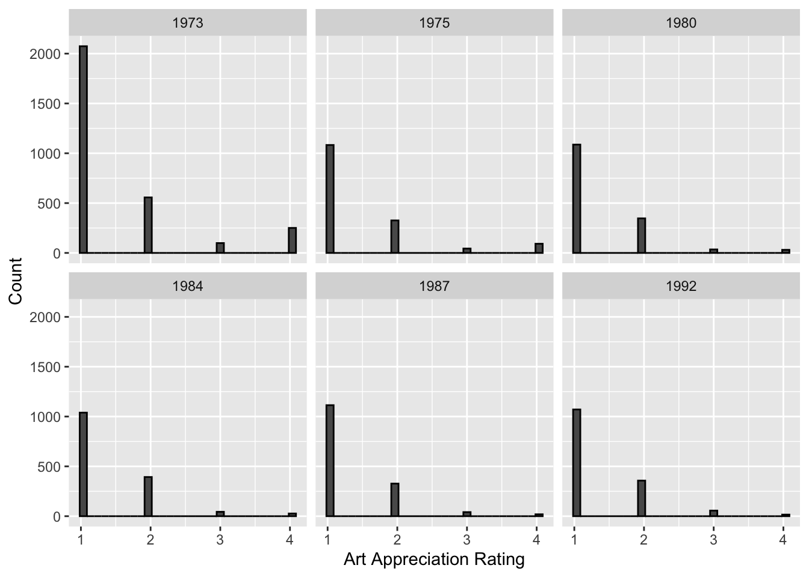
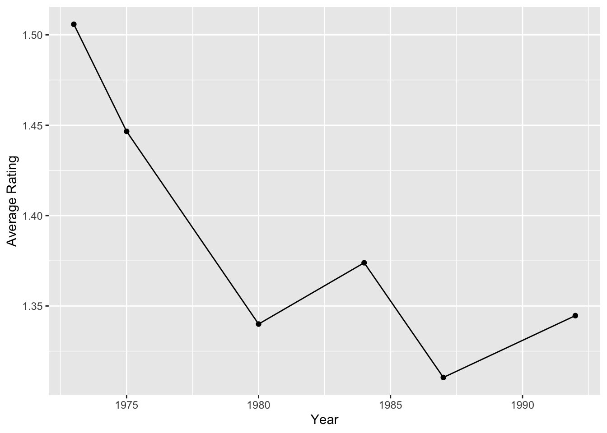

suppressWarnings(library(tidyverse))## ── Attaching core tidyverse packages ──────────────────────── tidyverse 2.0.0 ──
## ✔ dplyr 1.1.0 ✔ readr 2.1.4
## ✔ forcats 1.0.0 ✔ stringr 1.5.0
## ✔ ggplot2 3.4.1 ✔ tibble 3.2.1
## ✔ lubridate 1.9.2 ✔ tidyr 1.3.0
## ✔ purrr 1.0.1
## ── Conflicts ────────────────────────────────────────── tidyverse_conflicts() ──
## ✖ dplyr::filter() masks stats::filter()
## ✖ dplyr::lag() masks stats::lag()
## ℹ Use the ]8;;http://conflicted.r-lib.org/conflicted package]8;; to force all conflicts to become errorsIn this portfolio I explore The Americans and Arts study. Which is “a series of studies measuring participation in and attitudes about the arts and arts in education.” The study took place during the years of 1973, 1975, 1980, 1984, 1987, and 1992. In general my goal is took look at various questions asked in this data set regarding attitudes towards the arts and how they’ve changed over time.
First let’s load the data
#1973
load("DS0001/35575-0001-Data.rda")
D1973<-da35575.0001
rm(da35575.0001)
#1975
load("DS0002/35575-0002-Data.rda")
D1975<-da35575.0002
rm(da35575.0002)
#1980
load("DS0003/35575-0003-Data.rda")
D1980<-da35575.0003
rm(da35575.0003)
#1984
load("DS0004/35575-0004-Data.rda")
D1984<-da35575.0004
rm(da35575.0004)
#1987
load("DS0005/35575-0005-Data.rda")
D1987<-da35575.0005
rm(da35575.0005)
#1992
load("DS0006/35575-0006-Data.rda")
D1992<-da35575.0006
rm(da35575.0006)Alright so among all the data sets, they share one question in particular that I find interesting which is:
“Some people think that classes in the arts should be taught in public schools for children to learn and get credit for, just like math or science or English. Other people think that classes like those should be given, but only after school or as a non-credit activity; and still others don’t think they should be given at all. In your opinion, should the public schools in this area teach courses in art appreciation for credit, should it be an after-school or non-credit course, or should it not be offered at all?”
So essentially I’m interested in seeing how the answer to this question varies over time.
So now comes the tricky part. I have to merge these data sets…
First let’s reformat each data frame so it has the same structure
library(expss) %>% suppressWarnings() %>% suppressPackageStartupMessages()
#1973
D1973 <- D1973 %>%
select(CASEID, Q26A_7) %>%
rename("Art_Appreciation" = "Q26A_7") %>%
mutate(Year = 1973) %>%
mutate(Art_Appreciation = as.character(Art_Appreciation)) %>%
mutate(Art_Appreciation = dplyr::recode(Art_Appreciation,
"(1) Teach for credit" = "1",
"(2) Non-credit" = "2",
"(3) Should not offer at all" = "3",
"(4) Not sure" = "4")) %>%
mutate(Art_Appreciation = as.numeric(Art_Appreciation)) %>%
apply_labels(CASEID = "",
Art_Appreciation = "",
Year = "")
#1975
D1975 <- D1975 %>%
select(CASEID, Q17C_11) %>%
rename("Art_Appreciation" = "Q17C_11") %>%
mutate(Year = 1975) %>%
mutate(Art_Appreciation = as.character(Art_Appreciation)) %>%
mutate(Art_Appreciation = dplyr::recode(Art_Appreciation,
"(1) Teach for credit" = "1",
"(2) Non-credit" = "2",
"(3) Not at all" = "3",
"(4) Not sure" = "4")) %>%
mutate(Art_Appreciation = as.numeric(Art_Appreciation)) %>%
apply_labels(CASEID = "",
Art_Appreciation = "",
Year = "")
#1980
D1980 <- D1980 %>%
select(CASEID, Q14C_11) %>%
rename("Art_Appreciation" = "Q14C_11") %>%
mutate(Year = 1980) %>%
mutate(Art_Appreciation = as.character(Art_Appreciation)) %>%
mutate(Art_Appreciation = dplyr::recode(Art_Appreciation,
"(1) Teach for credit" = "1",
"(2) Non-credit" = "2",
"(3) Not at all" = "3",
"(4) Not sure" = "4")) %>%
mutate(Art_Appreciation = as.numeric(Art_Appreciation)) %>%
apply_labels(CASEID = "",
Art_Appreciation = "",
Year = "")
#1984
D1984 <- D1984 %>%
select(CASEID, Q16C_11) %>%
rename("Art_Appreciation" = "Q16C_11") %>%
mutate(Year = 1984) %>%
mutate(Art_Appreciation = as.character(Art_Appreciation)) %>%
mutate(Art_Appreciation = dplyr::recode(Art_Appreciation,
"(1) Teach for credit" = "1",
"(2) Non-credit" = "2",
"(3) Not at all" = "3",
"(4) Not sure" = "4")) %>%
mutate(Art_Appreciation = as.numeric(Art_Appreciation)) %>%
apply_labels(CASEID = "",
Art_Appreciation = "",
Year = "")
#1987
D1987 <- D1987 %>%
select(CASEID, Q15D_9) %>%
rename("Art_Appreciation" = "Q15D_9") %>%
mutate(Year = 1987) %>%
mutate(Art_Appreciation = as.character(Art_Appreciation)) %>%
mutate(Art_Appreciation = dplyr::recode(Art_Appreciation,
"(1) Teach for credit" = "1",
"(2) Non-credit" = "2",
"(3) Not at all" = "3",
"(4) Not sure" = "4")) %>%
mutate(Art_Appreciation = as.numeric(Art_Appreciation)) %>%
apply_labels(CASEID = "",
Art_Appreciation = "",
Year = "")
#1992
D1992 <- D1992 %>%
select(CASEID, Q13I_7) %>%
rename("Art_Appreciation" = "Q13I_7") %>%
mutate(Year = 1992) %>%
mutate(Art_Appreciation = as.character(Art_Appreciation)) %>%
mutate(Art_Appreciation = dplyr::recode(Art_Appreciation,
"(1) Teach for credit" = "1",
"(2) After school non-credit" = "2",
"(3) Not at all" = "3",
"(4) Not sure" = "4")) %>%
mutate(Art_Appreciation = as.numeric(Art_Appreciation)) %>%
apply_labels(CASEID = "",
Art_Appreciation = "",
Year = "")
detach("package:expss")PHEW! That’s a lot of data. Now let’s merge it all together by combining the rows
art_attitudes<-bind_rows(D1973,D1975,D1980,D1984,D1987,D1992)
art_attitudes<-art_attitudes %>% mutate(CASEID = 1:length(CASEID))
head(art_attitudes,10)## CASEID Art_Appreciation Year
## 1 1 1 1973
## 2 2 NA 1973
## 3 3 1 1973
## 4 4 1 1973
## 5 5 1 1973
## 6 6 2 1973
## 7 7 1 1973
## 8 8 4 1973
## 9 9 2 1973
## 10 10 1 1973Yay!!! Now we have a working data set that data collected on this question from 1973 to 1992. Let’s explore it!
First I want to see how the histograms compare
art_attitudes %>% ggplot(aes(x=Art_Appreciation))+
facet_wrap(~Year)+
geom_histogram(color="black")+
xlab("Art Appreciation Rating")+
ylab("Count")## `stat_bin()` using `bins = 30`. Pick better value with `binwidth`.## Warning: Removed 36 rows containing non-finite values (`stat_bin()`).
They look fairly similar over time. I’m going to dive deeper and look at the means. However, I do not expect this to look very different.
art_means<-art_attitudes %>% group_by(Year) %>%
summarise(mean_rating=mean(Art_Appreciation,na.rm = TRUE),
.groups = 'drop') %>%
as.data.frame()
art_means %>% ggplot(aes(x=Year,
y=mean_rating))+
ylab("Average Rating")+
geom_point()+
geom_line()
Interesting. There is a decline, but really this decline indicates an increase in ratings if you think about it. 1.5 gets close to 1 by becoming 1.3. However, I’m curious if this is actually significant in anyway, because the y-scale has clearly been modified to show the differences. Let’s run a simple t-test between 1973 and 1992. I will also sample 1500 from 1973 since it’s sample size is twice the size of 1992. I do this so the equal variances assumption is not violated.
set.seed(8444)
DS1973<-sample(D1973$Art_Appreciation,1500)
t.test(DS1973,D1992$Art_Appreciation, alternative = "greater")##
## Welch Two Sample t-test
##
## data: DS1973 and D1992$Art_Appreciation
## t = 6.111, df = 2574, p-value = 5.702e-10
## alternative hypothesis: true difference in means is greater than 0
## 95 percent confidence interval:
## 0.1269859 Inf
## sample estimates:
## mean of x mean of y
## 1.518444 1.344667Well, it’s very significant. However, I still do not trust these results considering the sample size for each was over 1,000. It’s very easy for it be significant with a sample size greater than 1,000. Therefore, I think I will need to investigate better methods on how to analyze this with an overly large sample size. Perhaps I can achieve this for my next portfolio.
Aside from this, the data is very interesting. There are tons of other variables I would like to explore in this data set. However, I would say this portfolio demonstrates more my ability to merge data sets for analysis as this was the majority of the time I spent on this project. This portfolio has been fun and I would like to continue exploring the art_attitudes data set I created in the future.